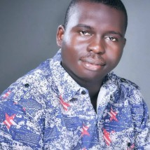

Kolawole Jegede | WDD 130
Hello! My name is Kolawole Jegede and I am from Lagos, Nigeria. I am a software developer. As a Software Developer with over three years of development experience, I have developed proficiency in front-end technologies (HTML, CSS, JavaScript) and back-end technologies (Node.js, Django), with good knowledge in using react.JS, Next.JS, Typescript and Tailwindcss. I have used integrated development environments (IDEs) and tools to write, test, and debug code. In addition, I have proficiency in version control systems (e.g., Git), which is essential for collaborative development, ranging from tracking changes, managing codebase versions, and facilitating teamwork. I enjoy reading and travelling.